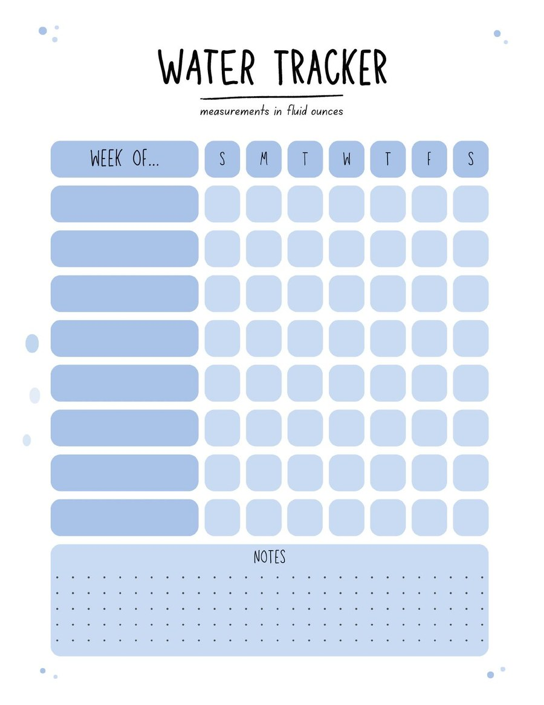

Water Tracker
A weekly fluid-ounce tracker with daily check boxes and a notes area. The PDF repeats the same template page for double-sided printing.
Download PDFSimple trackers and printable logging pages for household rhythms, homeschool notes, and small daily habits.

A weekly fluid-ounce tracker with daily check boxes and a notes area. The PDF repeats the same template page for double-sided printing.
Download PDFAll files are plain PDFs. Print at actual size unless your printer needs fit-to-page.